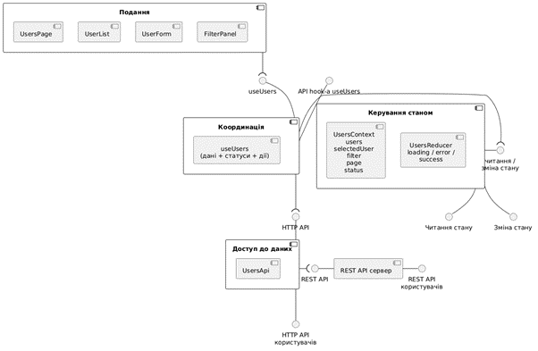
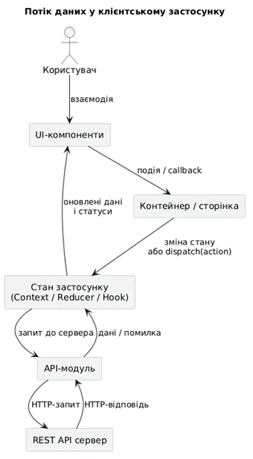

1. (Розширення архітектури станом застосунку) На основі реалізованого в практичній роботі 04 клієнт-серверного вебзастосунку для керування записами користувачів необхідно виконати його архітектурне доопрацювання, пов'язане з явним введенням рівня керування станом інтерфейсу та даних.
// Імпорт типів із загального модуля типів import type { User, PaginatedResponse } from '../types'; // Метадані пагінації — повертаються сервером разом зі списком export interface PaginatedMeta { total: number; page: number; limit: number; totalPages: number; } /** Єдине джерело істини — весь стан застосунку в одному об'єкті */ export interface UsersState { data: { // Дані предметної області users: User[]; selectedUser: User | null; // Обраний для редагування запис meta: PaginatedMeta; // Пагінаційні метадані }; ui: { // Параметри інтерфейсу (пошук, сортування, сторінка) search: string; sortBy: string; sortOrder: 'asc' | 'desc'; page: number; }; status: { // Службові прапорці стану HTTP-запиту loading: boolean; error: string | null; success: boolean; }; } // Дискримінований union-тип — кожна дія має унікальний рядковий тип export type UsersAction = | { type: 'FETCH_START' } // Запит розпочато | { type: 'FETCH_SUCCESS'; payload: PaginatedResponse<User> } // Дані отримано | { type: 'FETCH_ERROR'; payload: string } // Помилка запиту | { type: 'SET_SEARCH'; payload: string } // Зміна пошуку | { type: 'SET_SORT'; payload: { sortBy: string; sortOrder: 'asc' | 'desc' } } | { type: 'SET_PAGE'; payload: number } // Зміна сторінки | { type: 'SELECT_USER'; payload: User | null } // Вибір запису | { type: 'CLEAR_STATUS' }; // Скидання статусу // Початковий стан — завантажується один раз при ініціалізації провайдера export const initialState: UsersState = { data: { users: [], selectedUser: null, meta: { total: 0, page: 1, limit: 10, totalPages: 1 } }, ui: { search: '', sortBy: 'createdAt', sortOrder: 'desc', page: 1 }, status: { loading: false, error: null, success: false }, }; // Чиста функція-редуктор: отримує стан і дію, повертає новий стан без мутацій export function usersReducer(state: UsersState, action: UsersAction): UsersState { switch (action.type) { case 'FETCH_START': // Показуємо індикатор завантаження return { ...state, status: { loading: true, error: null, success: false } }; case 'FETCH_SUCCESS': // Зберігаємо список і метадані пагінації return { ...state, data: { ...state.data, users: action.payload.data, meta: action.payload.meta }, status: { loading: false, error: null, success: true }, }; case 'FETCH_ERROR': // Зберігаємо повідомлення помилки для відображення return { ...state, status: { loading: false, error: action.payload, success: false } }; case 'SET_SEARCH': // При зміні пошуку скидаємо сторінку на першу return { ...state, ui: { ...state.ui, search: action.payload, page: 1 } }; case 'SET_SORT': // При зміні сортування теж скидаємо сторінку return { ...state, ui: { ...state.ui, ...action.payload, page: 1 } }; case 'SET_PAGE': return { ...state, ui: { ...state.ui, page: action.payload } }; case 'SELECT_USER': // Зберігаємо обраний запис для форми редагування return { ...state, data: { ...state.data, selectedUser: action.payload } }; case 'CLEAR_STATUS': // Очищення після завершення операції return { ...state, status: { ...state.status, success: false, error: null } }; default: // Невідома дія — повертаємо стан незмінним return state; } }
// React Context API для передачі стану без prop drilling import { createContext, useContext, useReducer, type ReactNode } from 'react'; import { usersReducer, initialState } from './usersReducer'; import type { UsersState, UsersAction } from './usersReducer'; // Тип значення контексту — стан і функція dispatch для зміни стану interface UsersContextValue { state: UsersState; dispatch: React.Dispatch<UsersAction>; } // Ініціалізуємо контекст як null — захист від використання поза провайдером const UsersContext = createContext<UsersContextValue | null>(null); // Провайдер огортає дерево компонентів і надає їм доступ до стану export function UsersProvider({ children }: { children: ReactNode }) { // useReducer поєднує редуктор з початковим станом — аналог Redux store const [state, dispatch] = useReducer(usersReducer, initialState); return ( // Передаємо стан і dispatch всім дочірнім компонентам через контекст <UsersContext.Provider value={{ state, dispatch }}> {children} </UsersContext.Provider> ); } // Кастомний хук для безпечного доступу до контексту з перевіркою export function useUsersContext(): UsersContextValue { const ctx = useContext(UsersContext); // Виключення при використанні хука поза деревом UsersProvider if (!ctx) throw new Error('useUsersContext must be used within UsersProvider'); return ctx; }
import { useEffect, useCallback } from 'react'; import { useDispatch, useSelector } from 'react-redux'; import type { RootState, AppDispatch } from '../store'; import { fetchUsers, createUserThunk, updateUserThunk, deleteUserThunk, } from '../store/usersSlice'; import { setSearch, setSort, setPage } from '../store/uiSlice'; import type { CreateUserDto } from '../types'; export function useUsers() { const dispatch = useDispatch<AppDispatch>(); const users = useSelector((s: RootState) => s.users.users); const meta = useSelector((s: RootState) => s.users.meta); const loading = useSelector((s: RootState) => s.users.loading); const error = useSelector((s: RootState) => s.users.error); const success = useSelector((s: RootState) => s.users.success); const selectedUser = useSelector((s: RootState) => s.users.selectedUser); const search = useSelector((s: RootState) => s.ui.search); const sortBy = useSelector((s: RootState) => s.ui.sortBy); const sortOrder = useSelector((s: RootState) => s.ui.sortOrder); const page = useSelector((s: RootState) => s.ui.page); // useCallback мемоізує функцію — перестворюється лише при зміні залежностей const load = useCallback(() => { // Збираємо всі UI-параметри і відправляємо єдиний запит до API dispatch(fetchUsers({ search, sortBy, sortOrder, page, limit: 10 })); }, [dispatch, search, sortBy, sortOrder, page]); // Автоматично завантажуємо список при зміні будь-якого параметра фільтрації useEffect(() => { load(); }, [load]); // Диспетчеризуємо UI-дії напряму до store — без звернення до API const handleSearch = (val: string) => dispatch(setSearch(val)); const handleSort = (col: string) => { // Якщо клікнули по вже активному полю — інвертуємо напрям сортування if (col === sortBy) { dispatch(setSort({ sortBy: col, sortOrder: sortOrder === 'asc' ? 'desc' : 'asc' })); } else { // Нове поле — починаємо з висхідного порядку dispatch(setSort({ sortBy: col, sortOrder: 'asc' })); } }; const handlePage = (p: number) => dispatch(setPage(p)); // CRUD + інвалідація: .unwrap() кидає виключення при rejected thunk const handleCreate = async (data: CreateUserDto) => { await dispatch(createUserThunk(data)).unwrap(); load(); // Оновлюємо список після успішного створення }; const handleUpdate = async (id: number, data: CreateUserDto) => { await dispatch(updateUserThunk({ id, data })).unwrap(); load(); // Оновлюємо список після успішного редагування }; const handleDelete = async (id: number) => { await dispatch(deleteUserThunk(id)).unwrap(); load(); // Оновлюємо список після успішного видалення }; // Повертаємо все необхідне для компонентів — єдина точка доступу до стану return { users, meta, loading, error, success, selectedUser, search, sortBy, sortOrder, page, handleSearch, handleSort, handlePage, handleCreate, handleUpdate, handleDelete, reload: load, }; }
// Сторінка отримує всі дані через хук — жодних прямих звернень до API export function UsersPage() { // Деструктуруємо лише те, що потрібно цьому компоненту const { users, meta, loading, error, success, page, handlePage, handleCreate, handleUpdate, handleDelete, } = useUsers(); // Локальний стан лише для UI-деталей (яку форму показати, який запис видалити) const [departments, setDepartments] = useState<Department[]>([]); const [editUser, setEditUser] = useState<User | null>(null); const [deleteUser, setDeleteUser] = useState<User | null>(null); const [formMode, setFormMode] = useState<'create' | 'edit'>('create'); // Завантажуємо список відділів один раз при монтуванні компонента useEffect(() => { getDepartments().then(setDepartments).catch(() => {}); }, []); // Єдиний обробник форми — режим визначається через formMode const handleSubmit = async (data: CreateUserDto) => { if (formMode === 'edit' && editUser) { await handleUpdate(editUser.id, data); // Передаємо id запису для оновлення } else { await handleCreate(data); } setEditUser(null); setFormMode('create'); // Скидаємо форму після збереження }; // Компонент лише рендерить — вся логіка керування даними у хуку useUsers return ( <div style={pageWrapper}> <FilterPanel /> {/* Підключений до store через useDispatch */} <UserList users={users} loading={loading} error={error} success={success} onEdit={openEdit} onDelete={openDelete} /> <Pagination page={page} totalPages={meta.totalPages} total={meta.total} limit={meta.limit} onPageChange={handlePage} /> <UserForm initial={editUser} departments={departments} onSubmit={handleSubmit} onCancel={cancelForm} /> </div> ); }


2. (Централізоване керування станом бекенду) На основі архітектури, реалізованої в попередній практичній роботі, а також з урахуванням доопрацювань завдання 1, необхідно реалізувати нову версію клієнтської частини вебзастосунку з використанням Redux Toolkit як централізованого засобу керування станом.
1 Реалізуйте централізоване керування станом для адміністративного модуля роботи з користувачами. Застосунок повинен підтримувати отримання списку користувачів із сервера, створення, редагування, видалення, пошук за іменем або email, сортування та пагінацію. У Redux store необхідно виділити щонайменше slice для користувачів і slice для параметрів інтерфейсу. Після оновлення сторінки повинні відновлюватися поточний пошуковий запит і номер сторінки.
// configureStore автоматично підключає Redux DevTools і thunk middleware import { configureStore } from '@reduxjs/toolkit'; import usersReducer from './usersSlice'; // Відповідає за дані користувачів import uiReducer from './uiSlice'; // Відповідає за параметри інтерфейсу export const store = configureStore({ reducer: { users: usersReducer, // s.users — список, метадані, статуси запитів ui: uiReducer, // s.ui — пошук, сортування, поточна сторінка }, }); // Типи для типізованих хуків useSelector і useDispatch export type RootState = ReturnType<typeof store.getState>; export type AppDispatch = typeof store.dispatch;
import { createSlice, type PayloadAction } from '@reduxjs/toolkit'; // Ключ для збереження у localStorage — дозволяє відновити стан після F5 const STORAGE_KEY = 'users_ui_params'; interface UiState { search: string; sortBy: string; sortOrder: 'asc' | 'desc'; page: number; } // Зчитуємо збережені параметри з localStorage при старті застосунку function loadFromStorage(): Partial<UiState> { try { const raw = localStorage.getItem(STORAGE_KEY); return raw ? (JSON.parse(raw) as Partial<UiState>) : {}; } catch { return {}; } // localStorage може бути недоступний (приватний режим) } // Зберігаємо лише search і page — сортування скидається навмисно function saveToStorage(state: UiState) { try { localStorage.setItem(STORAGE_KEY, JSON.stringify({ search: state.search, page: state.page })); } catch {} } // Ініціалізуємо стан: відновлюємо search і page зі сховища, решту — за замовчуванням const saved = loadFromStorage(); const initialState: UiState = { search: saved.search ?? '', sortBy: 'createdAt', sortOrder: 'desc', page: saved.page ?? 1, }; // createSlice генерує редуктор і action creators одночасно const uiSlice = createSlice({ name: 'ui', initialState, reducers: { setSearch(state, action: PayloadAction<string>) { state.search = action.payload; state.page = 1; // Скидаємо на першу сторінку при новому пошуку saveToStorage(state); // Синхронно зберігаємо у localStorage }, setSort(state, action: PayloadAction<{ sortBy: string; sortOrder: 'asc' | 'desc' }>) { state.sortBy = action.payload.sortBy; state.sortOrder = action.payload.sortOrder; state.page = 1; // Зміна сортування — повертаємось на першу сторінку }, setPage(state, action: PayloadAction<number>) { state.page = action.payload; saveToStorage(state); }, resetFilters(state) { // Повне скидання всіх фільтрів до початкових state.search = ''; state.sortBy = 'createdAt'; state.sortOrder = 'desc'; state.page = 1; saveToStorage(state); }, }, }); export const { setSearch, setSort, setPage, resetFilters } = uiSlice.actions; export default uiSlice.reducer;
import { createSlice, createAsyncThunk } from '@reduxjs/toolkit'; // Імпортуємо функції з окремого API-модуля — слайс не знає про fetch/axios import { getUsers, createUser, updateUser, deleteUser } from '../api/userApi'; import type { User, UsersQueryParams, CreateUserDto } from '../types'; import type { PaginatedMeta } from '../state/usersReducer'; // Стан цього слайсу: дані користувачів + статуси всіх CRUD-операцій interface UsersSliceState { users: User[]; selectedUser: User | null; meta: PaginatedMeta; loading: boolean; error: string | null; success: boolean; } // createAsyncThunk генерує 3 action'и автоматично: // fetchUsers.pending → показати лоадер // fetchUsers.fulfilled → зберегти дані // fetchUsers.rejected → зберегти помилку export const fetchUsers = createAsyncThunk( 'users/fetchUsers', async (params: UsersQueryParams) => { const result = await getUsers(params); return result; } ); export const createUserThunk = createAsyncThunk( 'users/createUser', async (data: CreateUserDto) => await createUser(data) ); export const updateUserThunk = createAsyncThunk( 'users/updateUser', async ({ id, data }: { id: number; data: CreateUserDto }) => await updateUser(id, data) ); export const deleteUserThunk = createAsyncThunk( 'users/deleteUser', // Повертаємо id, щоб extraReducers знав який запис видалено async (id: number) => { await deleteUser(id); return id; } ); const usersSlice = createSlice({ name: 'users', initialState, reducers: { // Синхронні дії для локального UI-стану (не потребують запиту до API) selectUser(state, action) { state.selectedUser = action.payload; }, clearStatus(state) { state.success = false; state.error = null; }, }, // extraReducers перехоплює дії від thunk-ів і оновлює стан відповідно extraReducers: (builder) => { builder .addCase(fetchUsers.pending, (state) => { // Запит розпочато — показуємо індикатор завантаження state.loading = true; state.error = null; state.success = false; }) .addCase(fetchUsers.fulfilled, (state, action) => { state.loading = false; state.users = action.payload.data; // Зберігаємо список state.meta = action.payload.meta; state.success = true; }) .addCase(fetchUsers.rejected, (state, action) => { state.loading = false; state.error = action.error.message ?? 'Помилка завантаження'; // Зберігаємо помилку state.success = false; }) .addCase(createUserThunk.pending, (state) => { state.loading = true; state.error = null; }) .addCase(createUserThunk.fulfilled, (state) => { state.loading = false; state.success = true; }) .addCase(createUserThunk.rejected, (state, action) => { state.loading = false; state.error = action.error.message ?? 'Помилка створення'; }) .addCase(updateUserThunk.pending, (state) => { state.loading = true; state.error = null; }) .addCase(updateUserThunk.fulfilled, (state) => { state.loading = false; state.success = true; state.selectedUser = null; }) .addCase(updateUserThunk.rejected, (state, action) => { state.loading = false; state.error = action.error.message ?? 'Помилка оновлення'; }) .addCase(deleteUserThunk.pending, (state) => { state.loading = true; state.error = null; }) .addCase(deleteUserThunk.fulfilled, (state) => { state.loading = false; state.success = true; }) .addCase(deleteUserThunk.rejected, (state, action) => { state.loading = false; state.error = action.error.message ?? 'Помилка видалення'; }); }, }); export const { selectUser, clearStatus } = usersSlice.actions; export default usersSlice.reducer;
import { useEffect, useCallback } from 'react'; import { useDispatch, useSelector } from 'react-redux'; import type { RootState, AppDispatch } from '../store'; import { fetchUsers, createUserThunk, updateUserThunk, deleteUserThunk, } from '../store/usersSlice'; import { setSearch, setSort, setPage } from '../store/uiSlice'; import type { CreateUserDto } from '../types'; export function useUsers() { const dispatch = useDispatch<AppDispatch>(); // Селектори: читання стану з Redux store const users = useSelector((s: RootState) => s.users.users); const meta = useSelector((s: RootState) => s.users.meta); const loading = useSelector((s: RootState) => s.users.loading); const error = useSelector((s: RootState) => s.users.error); const success = useSelector((s: RootState) => s.users.success); const selectedUser = useSelector((s: RootState) => s.users.selectedUser); const search = useSelector((s: RootState) => s.ui.search); const sortBy = useSelector((s: RootState) => s.ui.sortBy); const sortOrder = useSelector((s: RootState) => s.ui.sortOrder); const page = useSelector((s: RootState) => s.ui.page); // Завантаження при зміні будь-якого UI-параметра const load = useCallback(() => { dispatch(fetchUsers({ search, sortBy, sortOrder, page, limit: 10 })); }, [dispatch, search, sortBy, sortOrder, page]); useEffect(() => { load(); }, [load]); const handleSearch = (val: string) => dispatch(setSearch(val)); const handleSort = (col: string) => { if (col === sortBy) { dispatch(setSort({ sortBy: col, sortOrder: sortOrder === 'asc' ? 'desc' : 'asc' })); } else { dispatch(setSort({ sortBy: col, sortOrder: 'asc' })); } }; const handlePage = (p: number) => dispatch(setPage(p)); // CRUD та Інвалідація: після кожної операції перезавантажуємо список const handleCreate = async (data: CreateUserDto) => { await dispatch(createUserThunk(data)).unwrap(); load(); }; const handleUpdate = async (id: number, data: CreateUserDto) => { await dispatch(updateUserThunk({ id, data })).unwrap(); load(); }; const handleDelete = async (id: number) => { await dispatch(deleteUserThunk(id)).unwrap(); load(); }; return { users, meta, loading, error, success, selectedUser, search, sortBy, sortOrder, page, handleSearch, handleSort, handlePage, handleCreate, handleUpdate, handleDelete, reload: load, }; }
У ході виконання практичної роботи № 5 було реалізовано розширення архітектури клієнтського вебзастосунку шляхом введення явного рівня керування станом інтерфейсу та даних.
У межах першого завдання було формалізовано структуру стану застосунку у вигляді об'єкта з трьома секціями: data (користувачі, вибраний запис, метадані пагінації), ui (параметри пошуку, сортування, поточна сторінка) та status (прапорці завантаження, помилки та успішного завершення операції). Реалізовано чистий редуктор usersReducer, що обробляє всі можливі події без побічних ефектів, провайдер стану UsersProvider на основі useReducer та useContext, а також кастомний хук useUsersContext для інкапсуляції доступу до контексту. Компоненти подання залишаються «чистими» — вони лише відображають отримані дані і не містять логіки роботи з API.
У межах другого завдання (Варіант 1) реалізовано централізоване керування станом адміністративного модуля роботи з користувачами засобами Redux Toolkit. Сконфігуровано єдиний Redux store за допомогою configureStore з двома слайсами: usersSlice — для зберігання колекції користувачів та статусів запитів, і uiSlice — для параметрів інтерфейсу (пошук, сортування, пагінація). Для кожної CRUD-операції створено асинхронний thunk на основі createAsyncThunk, що автоматично генерує дії pending, fulfilled та rejected. Реалізовано збереження пошукового запиту та номера сторінки у localStorage з автоматичним відновленням після перезавантаження сторінки. Після кожної операції створення, редагування або видалення список користувачів автоматично оновлюється без ручного перезавантаження.
Усі компоненти подання отримують дані виключно через хук useUsers, який використовує useSelector для читання стану зі store та useDispatch для відправки дій. Такий підхід забезпечує єдине джерело істини, передбачувану поведінку інтерфейсу та спрощує подальше масштабування застосунку.